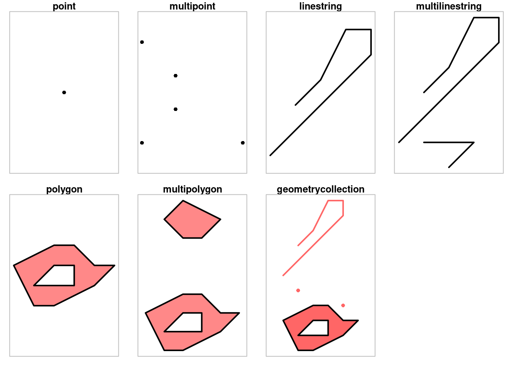
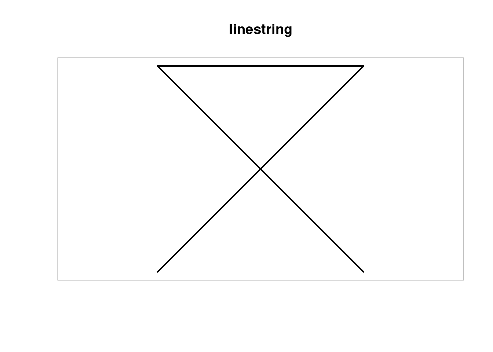

library(sf) |>
suppressPackageStartupMessages()Simple Features in Spatial Analytics
Spatial Analytics
In my last article, I explained the workings of the Methods and Data Frames for Spatial Point data. For a quick recap of these important concepts, visit here:
Spatial Methods And Data Frames in R
This blog will introduce simple features package and the use of Simple features and geometries in Spatial Analytics.

Simple feature geometries
Simple feature geometries are a way to describe the geometries of features. By features I mean things that have a geometry, potentially implicitly some time properties, and further attributes that could include labels describing the thing and/or values quantitatively measuring it. (Roger S. Bivand 2023)
The most common simple features geometries to represent a single feature are:
- Point: It is a single point geometry.
- Multipoint: It is a set of points.
- Linestring: A single linestring (two or more points connected by straight lines)
- Multilinestring: It is a set of line strings.
- Polygon: It is a exterior ring with zero or more inner rings, denoting holes.
- Multipolygon: It is a set of polygons.
- GeometryCollection: It is a set of more than two geometris defined above.
Let us plot all the geometries in R by using simple features package in R widely known as sf
Then I start plotting the “big seven” simple features in R.
par(mfrow = c(2,4))
par(mar = c(1,1,1.2,1))
# 1
p <- st_point(0:1)
plot(p, pch = 16)
title("point")
box(col = 'grey')
# 2
mp <- st_multipoint(rbind(c(1,1), c(2, 2), c(4, 1), c(2, 3), c(1,4)))
plot(mp, pch = 16)
title("multipoint")
box(col = 'grey')
# 3
ls <- st_linestring(rbind(c(1,1), c(5,5), c(5, 6), c(4, 6), c(3, 4), c(2, 3)))
plot(ls, lwd = 2)
title("linestring")
box(col = 'grey')
# 4
mls <- st_multilinestring(list(
rbind(c(1,1), c(5,5), c(5, 6), c(4, 6), c(3, 4), c(2, 3)),
rbind(c(3,0), c(4,1), c(2,1))))
plot(mls, lwd = 2)
title("multilinestring")
box(col = 'grey')
# 5 polygon
po <- st_polygon(list(rbind(c(2,1), c(3,1), c(5,2), c(6,3), c(5,3), c(4,4), c(3,4), c(1,3), c(2,1)),
rbind(c(2,2), c(3,3), c(4,3), c(4,2), c(2,2))))
plot(po, border = 'black', col = '#ff8888', lwd = 2)
title("polygon")
box(col = 'grey')
# 6 multipolygon
mpo <- st_multipolygon(list(
list(rbind(c(2,1), c(3,1), c(5,2), c(6,3), c(5,3), c(4,4), c(3,4), c(1,3), c(2,1)),
rbind(c(2,2), c(3,3), c(4,3), c(4,2), c(2,2))),
list(rbind(c(3,7), c(4,7), c(5,8), c(3,9), c(2,8), c(3,7)))))
plot(mpo, border = 'black', col = '#ff8888', lwd = 2)
title("multipolygon")
box(col = 'grey')
# 7 geometrycollection
gc <- st_geometrycollection(list(po, ls + c(0,5), st_point(c(2,5)), st_point(c(5,4))))
plot(gc, border = 'black', col = '#ff6666', pch = 16, lwd = 2)
title("geometrycollection")
box(col = 'grey')
These seven simple feature geometries have defined functions in the sf package in R. For instance, to create a LineString, I used st_linestring().
Linestrings are called simple when they do not self-intersect. I make a linestring in R by the following code.
ls <- st_linestring(rbind(c(0,0), c(1,1), c(2,2), c(0,2), c(1,1), c(2,0)))
plot(ls, lwd = 2)
title("linestring")
box(col = 'grey')
Clearly, this linestring is not “simple” because it intersects at point (1,1). We can also check it using st_is_simple() function.
st_is_simple(ls)[1] FALSEFor polygons, we need to check their validity. Valid polygons and multi-polygons obey all of the following properties:
- Polygon rings are closed (the last point equals the first)
- Polygon holes (inner rings) are inside their exterior ring.
- Polygon inner rings maximally touch the exterior ring in single points, not over a line
- A polygon ring does not repeat its own path.
- In a multi-polygon, an external ring maximally touches another exterior ring in single points, not over a line
Operations on Geometries
Simple feature geometries can be queried for properties, or transformed or combined into new geometries, and combinations of geometries can be queried for further properties. We can categorise operations on geometries in terms of their input and output. In terms of output we have operations that return:
- Predicates: a logical asserting a certain property is TRUE
- Measures: a quantity (a numeric value, possibly with measurement unit)
- Transformations: newly generated geometries
In terms of inputs, we distinguish operations that are:
- Unary when they work on a single geometry
- Binary when they work on pairs of geometries
- N-ary when they work on sets of geometries
Ending Remarks
This makes the end of an introduction of Simple Features package and its geometries. In my next blog, I will further explain the Operations of simple features and how they can be useful in Spatial Analytics.
References
Roger S. Bivand, Edzer Pebesma. 2023. Spatial Data Science with Applications in r. CRC Press.